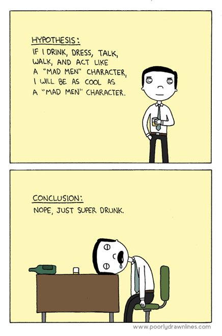
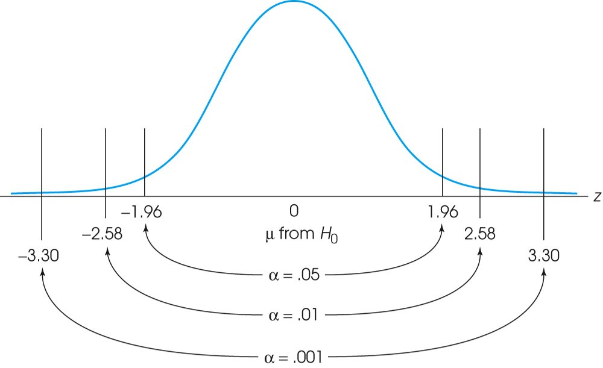
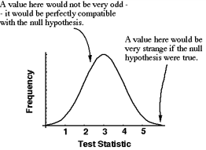
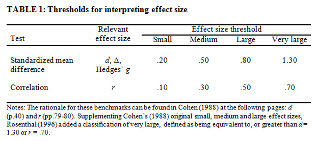
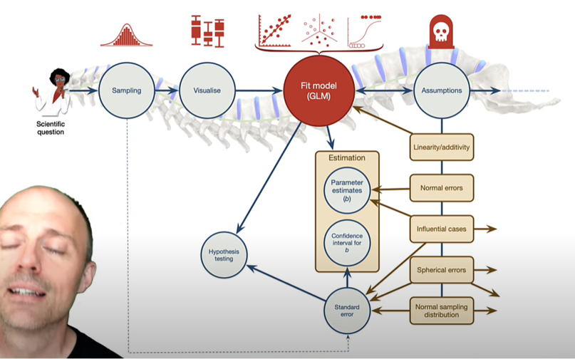
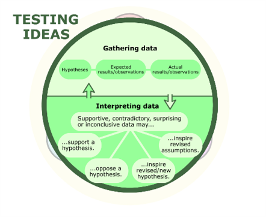
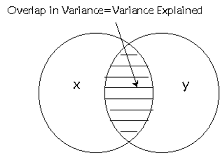

1. Introduction
Hypothesis Testing
Statistics for CSAI II
Travis J. Wiltshire, Ph.D.
Outline
What we will cover today:
- Quiz
- Hypothesis Testing Revisited
- Correlation
2. Hypothesis testing
What is a hypothesis?
- A formal statement predicting the relationship between two or more variables.
- The number of hours spent studying will improve student’s grades in a course.
- Playing video games more often will lead to stronger social relationships in teenagers.
- Higher instances of communication breakdowns in teams will lead to poorer teamwork performance.
Hypothesis Testing
- The general goal of a hypothesis test is to rule out chance (sampling error) as a plausible explanation for the results from a research study.
- Hypothesis testing is a technique often used to help determine whether a specific treatment has an effect on the individuals in a population.

Null and Alternative Hypotheses
- Convert the research question to null and alternative hypotheses
- The null hypothesis (H0) is a claim of “no difference in the population”
- Or an effect is zero
- The alternative hypothesis (Ha) claims “H0 is false”
- Collect data and seek evidence against H0 as a way of bolstering Ha (deduction)
Critical regions


Critical regions

Exercise 1: Z-test in R
- Randomly generate a vector in R from a normal distribution with mean of 55.4, n=30,sd=5.
- Install and load the BSDA package
- Check out the arguments for the
z.test()function - Come up with a null hypothesis and alternative hypothesis regarding your randomly generated vector using the following population parameters: H0 : μ0 = 50, σ = 20
- Use the
z.test()function to test your hypothesis - Read the output and make a decision about the null hypothesis
Load
In this online coding environment it’s not needed to load the data, because they are pre-loaded. However, do not forget to load the data and libraries when running R studio on your computer!
#Require BSDA
require(BSDA)#store1. Code to generate a vector from a random normal distribution with a certain mean and standard deviation
#code to generate a vector from a random normal distribution with a certain
#mean and standard deviation#code to generate a vector from a random normal distribution with a certain
#mean and standard deviation
x<-rnorm(n=30,mean=55.4,sd=5)#store2. Code to generate a z statistic and results
#code to generate a z statistic and results#code to generate a z statistic and results
z.test(x=x,sigma.x=20,mu=50,conf.level=0.95,alternative='greater')#storeUsing the t distribution when population SD is unknown
- S is our sample SD
\[t-statistic=\frac{\overline{x}-\mu_{0}}{\frac{S}{\sqrt{n}}}\] 
Exercise 2: T-test in R
- Use your vector in R from a normal distribution with mean of 55.4, n=30,sd=5.
- Check out the arguments for the
t.test()function - Come up with a null hypothesis and alternative hypothesis regarding your randomly generated vector using the following population parameter: H0 : μ0 = 50
- Use the
t.test()function to test your hypothesis - Read the output and make a decision about the null hypothesis
- How does this compare to your z.test?
- What about the CIs?
Code to generate a t-statistic and results
#code to generate a t statistic and results# code to generate a t statistic and results
t.test(x=x,mu=50,conf.level=0.95,alternative='greater')#storeErrors in Hypothesis Tests
- Just because the sample mean (following treatment) is different from the original population mean does not necessarily indicate that the treatment has caused a change or that there is an effect.
- You should recall that there usually is some discrepancy between a sample mean and the population mean simply as a result of sampling error.

Measuring Effect Size
- Because a significant effect does not necessarily mean a large effect, it is recommended that the hypothesis test be accompanied by a measure of the effect size.
- For mean comparisons we typically use Cohen’s d as a standardized measure of effect size.
- Much like a z-score, Cohen’s d measures the size of the mean difference in terms of the standard deviation.

Effec Size

Exercise 3: Cohen’s D effect size
- Install/load the ‘psych’ package
- Read about the
cohen.d()function - Load the sat.act data from the psych package into your global env.
- Calculate the effect size that gender has on each of the variables in the sat.act dataset
- What do the effect sizes tell you?
Code for effect size example
In this online coding environment it’s not needed to load the data, because they are pre-loaded. However, do not forget to load the data and libraries when running R studio on your computer!
#code to generate effect size sample# code to generate a effect size sample
require(psych)
cohen.d(sat.act,"gender")
cd <- cohen.d.by(sat.act,"gender","education") #Compound effect sizes
summary(cd) #summarize the output#storeHypothesis Testing and a Model Based Approach
- Data = Model + Error
- Comparison (relationship) vs Prediction (predicted outcomes vs predicting relationship vs using the model for prediction)
Hypothesis Testing in a Model-Based Framework

Test ideas

3. Correlation
Outline
- Measuring relationships
- Scatterplots
- Covariance
- Pearson’s correlation coefficient
- Nonparametric measures
- Spearman’s rho
- Kendall’s tau
- Interpreting correlations
- Causality
- Partial correlations
What is a correlation?
- It is a way of measuring the extent to which two variables are related.
- It measures the pattern of responses across variables.

Different types of relationships

www.guessthecorrelation.com
- www.guessthecorrelation.com

Measuring Relationships
- We need to see whether as one variable increases, the other increases, decreases or stays the same.
- This can be done by calculating the covariance.
- We look at how much each score deviates from the mean.
- If both variables deviate from the mean by the same amount, they are likely to be related.

Revisiting the Variance
- The variance tells us by how much scores deviate from the mean for a single variable.
- It is closely linked to the sum of squares.
- Covariance is similar – it tells is by how much scores on two variables differ from their respective means.
\[variance = \frac{\sum_{i=1}^{n}(x_i - \mu)^2} {N-1}\] - Sum of squared errors (deviations from the mean) - Square to avoid values canceling each other out when summing.
Covariance
- Calculate the error between the mean and each subject’s score for the first variable (x).
- Calculate the error between the mean and their score for the second variable (y).
- Multiply these error values.
- Add these values and you get the cross product deviations.
- The covariance is the average cross-product deviations:
\[cov_{x,y}=\frac{\sum_{i=1}^{N}(x_{i}-\bar{x})(y_{i}-\bar{y})}{N-1}\]
Calculating example
\(cov_{x,y}=\frac{\sum(x_{i}-\bar{x})(y_{i}-\bar{y})}{N-1}\\=\frac{(-0.4)(-3)+(-1.4)(-2)+(-1.4)(-1)+(0.6)(2)+(2.6)(4)}{4}\\=\frac{1.2+2.8+1.4+1.2+10.4}{4}\\=\frac{17}{4}\\=4.25\)
Covariance in R
- Create two variables in R:
- Ads with values 5,4,4,6,8
- Packets with values 8, 9, 10, 13, 15
- Use the
cov()function to calculate the covariance of ads and packets
1. Creating two variables
#Require ads<-c(5,4,4,6,8)
packets<-c(8,9,10,13,15)#store2. Calculating the covariance of two variables
#Require cov(ads,packets)#storeProblems with Covariance
- It depends upon the units of measurement.
- E.g. the covariance of two variables measured in miles might be 4.25, but if the same scores are converted to kilometres, the covariance is 11.
- One solution: standardize it!
- Divide by the standard deviations of both variables.
- The standardized version of covariance is known as the correlation coefficient.
- It is relatively unaffected by units of measurement.
- BONUS: We can manually standardize variables to put them on the same scale by subtracting the mean from each value and dividing by the standard deviation (turning them into z-scores).
\[ r =\frac{ cov_{xy} }{s_{x}s_{y}}\]
\(r = \frac{ cov_{xy} }{s_{x}s_{y}}\\=\frac{4.25}{1.67 \times 2.29}\\= .87\)
Standardizing and Correlation in R
- Create new variables by standardizing both variables below using the
scale()function:- Ads
- Packets
- Use the
cov()function to calculate the covariance of the standardized versions of ads and packets - Use the
cor()function to calculate the correlation of ads and packets
Testing out standardization of variables
#Require std_ads<-scale(ads)
std_packets<-scale(packets)
cov(std_ads,std_packets)#storeCalculating the correlation coefficients
#Require cor(ads,packets, method="pearson")#storeThings to Know about the Correlation
- It varies between -1 and +1
- 0 = no relationship
- It is an effect size
- ±.1 = small effect
- ±.3 = medium effect
- ±.5 = large effect
- Coefficient of determination, \(r^{2}\)
- By squaring the value of r you get the proportion of variance in one variable shared by the other.

General Procedure for Correlations Using R
- To compute basic correlation coefficients there are three main functions that can be used:
cor()cor.test()rcorr()

Hypothesis testing with correlations
- We can use
cor.test()to test the null hypothesis that the correlation in the population is 0. - And we can also specify our alternative for whether there should be a negative relationship (alternative =‘less’) or positive association (alternative=‘greater’)
- Also provides p-values, and CIs
Correlation Testing in R
- Use the
cor.test()function to calculate the correlation of ads and packets - Use the
cor.test()function to calculate the correlation of ads and packets predict a negative association - Use the
cor.test()function to calculate the correlation of ads and packets predict a positive association
What do these results suggest to you? Is the correlation between these variables significant?
Testing the correlation, obtaining a p-value and CIs and making a prediction about positive or negative relationships
#Require cor.test(ads,packets, method="pearson")
cor.test(ads,packets, method="pearson",alternative = "less")
cor.test(ads,packets, method="pearson",alternative = "greater")#storeCorrelation and Causality
- The third-variable problem:
- In any correlation, causality between two variables cannot be assumed because there may be other measured or unmeasured variables affecting the results.
- Direction of causality:
- Correlation coefficients say nothing about which variable causes the other to change.
Check this out for some interesting spurious correlations: https://tylervigen.com/discover

More Correlation Testing in R
- Load the Exam Anxiety.dat file into R using
read.delim()function- 103 participants, variables indicated Time spent revising (hours), Exam performance (%), Exam Anxiety (the EAQ, score out of 100), Gender
- Make a prediction about the relationship between exam performance and anxiety and test it using the
cor.test()function- What did you observe? Was there a significant correlation? What is the size (small, medium, large)? -What is the r2 value? What does this mean?
- Generate an exploratory correlation matrix using the
correlate()function from thelsrpackage. How do you interpret this?
1. Loading Exam Anxiety data amd correlation test
In this online coding environment it’s not needed to load the data, because they are pre-loaded. However, do not forget to load the data and libraries when running R studio on your computer
# your code hereexam_data<-read.delim(file="Exam Anxiety.dat",header=TRUE)
cor.test(exam_data$Exam, exam_data$Anxiety, method = "pearson", alternative='less')#store2. Relation between Revising and Anxiety
cor.test(exam_data$Revise, exam_data$Anxiety, method = "pearson", alternative='less')#store3. Generate a correlation matrix
require(lsr)
correlate(exam_data)#storeReporting results of a correlation
- Exam performance was significantly correlated with exam anxiety, r = .44, and time spent revising, r = .40; the time spent revising was also correlated with exam anxiety, r = .71 (all ps < .001).
- Remember it is best to report exact p-values, but these are all very very small.
Conculsion
Summing up
- Correlations
- Positive, negative and range from -1 to 1
- Small, medium, large effects
- Not causal
Thanks!
See you next week! Questions?